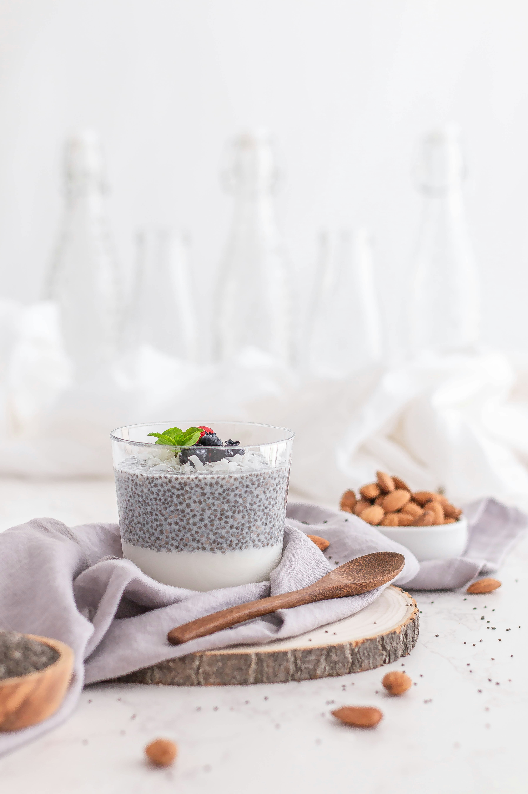

Key Features

Recipe Discovery
Explore a diverse collection of recipes categorized by cuisine, dietary preferences, and cooking time. Find your next culinary inspiration with ease!

Personalized Recommendations
Receive tailored recipe suggestions based on your dietary preferences, cooking history, and flavor profile. Let RecipeRise be your personal sous chef!

Interactive Cooking Guides
Follow along with interactive cooking guides featuring detailed instructions, ingredient lists, and cooking tips. Enhance your culinary skills and create mouthwatering dishes like a pro!